Облачный сервис. Локальная обработка. Нулевые риски.
Ноябрь 2025
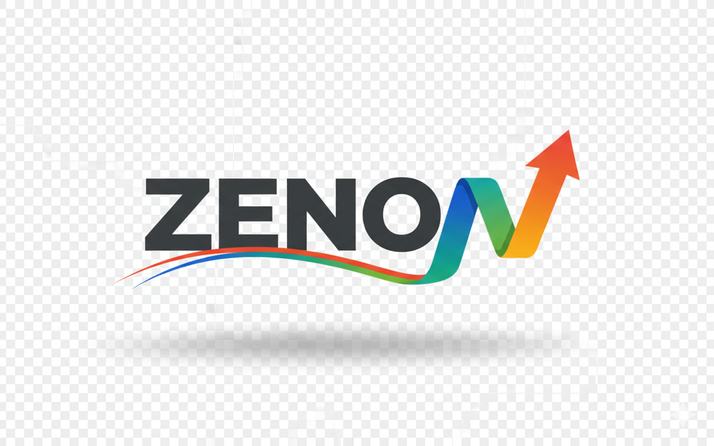
Версия: 1.0
Дата: Ноябрь 2025
Статус: MVP-готовность (FinTech, GDPR-first)
Максим Вязов — Founder & CTO
Илья Аснер — Co-Founder & Business Lead
Отказ от ответственности:
Настоящий документ является конфиденциальным и предназначен исключительно для акселераторов, инкубаторов и стратегических партнёров, изучающих проект ZENO CY.
Перепечатка, копирование или распространение без письменного разрешения запрещены.
ZENO CY — FinTech SaaS нового поколения, который автоматизирует работу с банковскими выписками и финансовыми документами без передачи данных в облако.
Мы совмещаем удобство облачного сервиса и безопасность “on-device”
обработки:
все CSV, XLSX и PDF обрабатываются локально на устройстве
клиента через наш Go → WebAssembly движок.
Автоматизация документов без риска и без передачи данных в облако.
Мы запрашиваем €20,000 для запуска пилотов и выхода на рынок Кипра.
ZENO CY — автоматизация финансовых документов, не касаясь данных клиента.
Движок и MVP готовы к пилоту с 5–7 фирмами в первые месяцы 2026 года.
Ручная обработка финансовых документов остаётся одной из самых
дорогих и уязвимых частей бухгалтерского, аудиторского и
fiduciary-сектора.
Особенно — на Кипре и в Южной Европе.
Каждый кипрский и европейский банк использует свой
собственный CSV/PDF формат.
Даже внутри одного банка — формат может меняться от месяца к месяцу.
Это приводит к тому, что бухгалтер тратит 5–8 часов в неделю только на базовую подготовку данных:
Исследования кипрских аутсорсинговых бухгалтерий показывают, что:
Передача финансовых документов в облако — это главный стоп-фактор для бухгалтерий в ЕС.
Почему:
Для кипрских fiduciary-компаний это часто означает одно:
“Мы не можем использовать облачные сервисы. Это слишком рискованно.”
Даже в 2025 году большая часть финансовых процессов Европы выглядит так:
Проблема человеческого фактора приводит к:
Бизнесы Европы перегружены тем, что:
А многие бухгалтерские системы Европы не принимают кипрские CSV без ручной чистки.
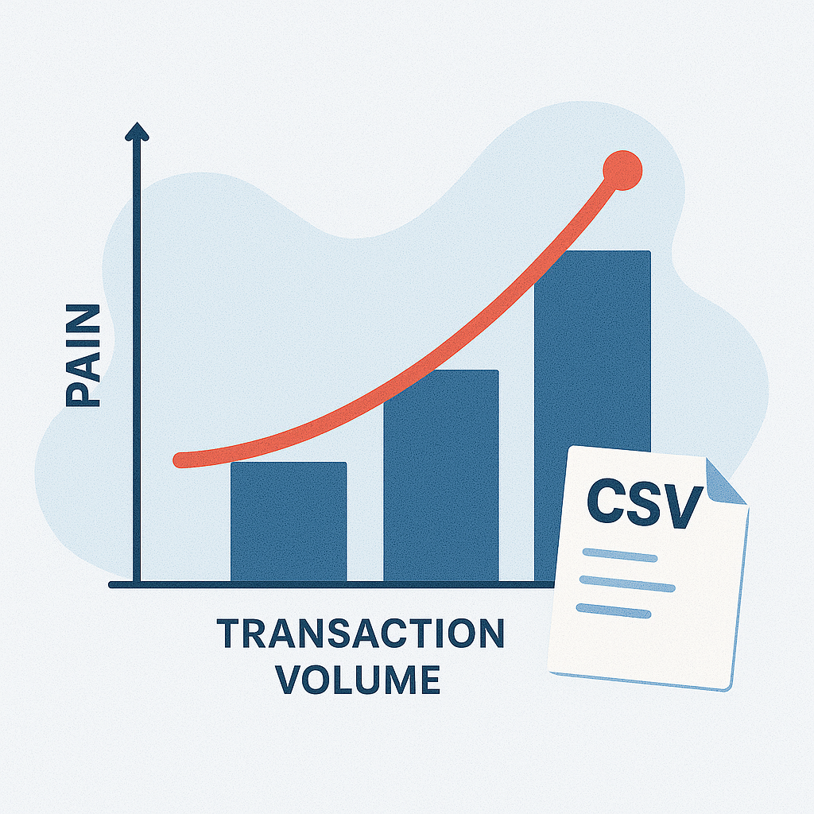
Европейские фирмы тратят тысячи евро и сотни часов на рутину,
потому что боятся передавать финансовые документы в облако
и не имеют инструмента для безопасной локальной автоматизации.
Мы создали архитектуру, которая сочетает гибкость облачного
SaaS
и максимальную безопасность локальной обработки данных.
Главное отличие ZENO CY от традиционных SaaS-платформ:
Все CSV, Excel и PDF проходят локальную обработку через наш
модуль
на основе Go → WebAssembly, который запускается прямо в
браузере пользователя.
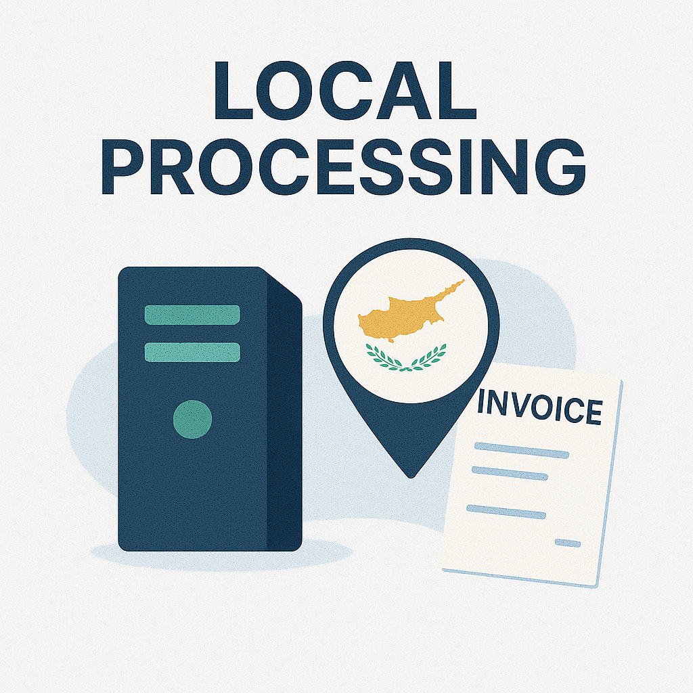
Мы разработали модуль Normalization Engine на языке Go, который собирается в WebAssembly.
Он работает в браузере и выполняет:
Облако используется только для “внешней” оболочки:
Никакие документы туда не отправляются.
Там, где раньше бухгалтер:
Теперь ZENO CY делает это:
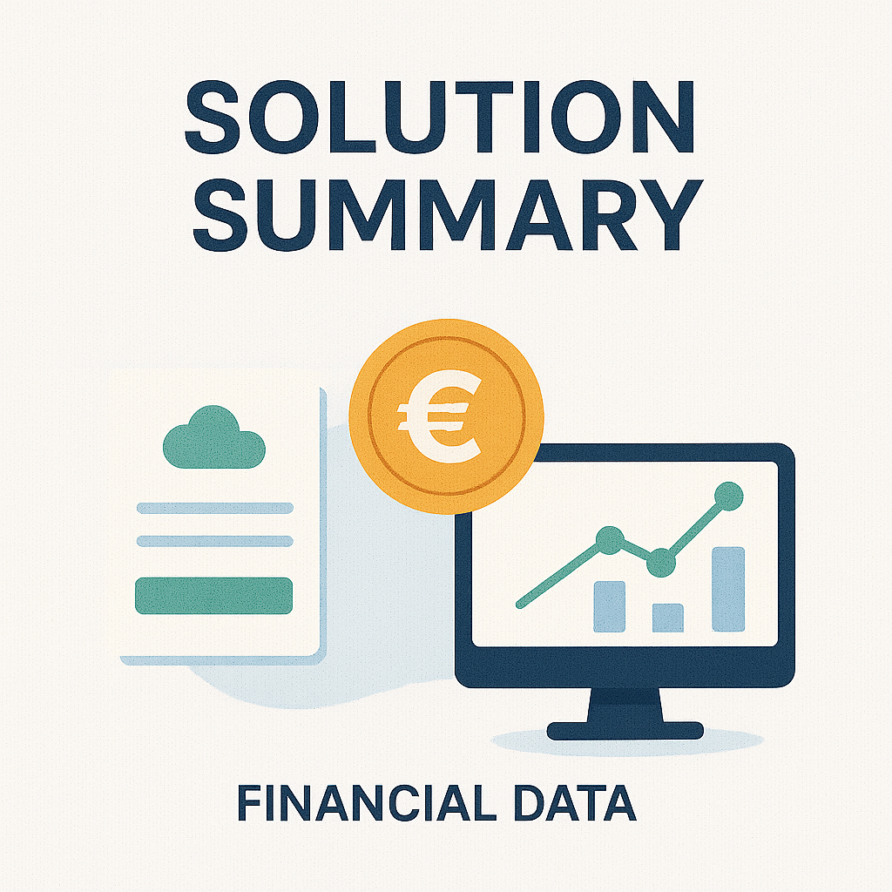
“Ваши финансовые документы — только у вас.
Автоматизация и интеллект — от нас.”
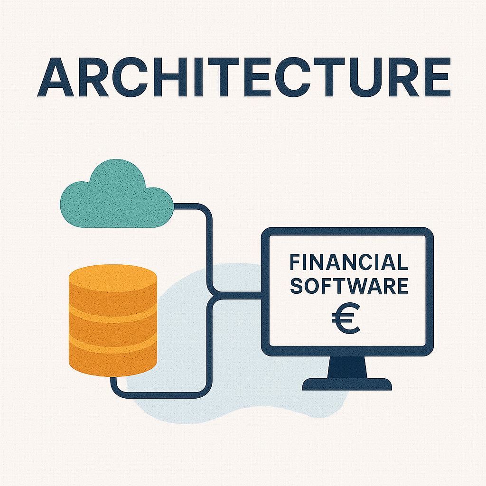
“Облако управляет, устройство считывает и обрабатывает.”**
Эта архитектура обеспечивает редкое сочетание:
Локальное ядро встраивается прямо в браузер пользователя:
.wasm),📌 Документ ни на миллиметр не выходит из устройства клиента.
Облачная панель управления:
UI ценит чистоту и скорость — процессинг не блокирует интерфейс.
Облако работает как “управляющий центр”:
Мини-сервис для:
Он получает только:
→ Без содержания документа.
→ Без хранения чувствительных данных.
Фронтенд автоматически загружает новую версию .wasm:
Клиент получает самую свежую обработку — без установки, без обновлений, без потерь времени.
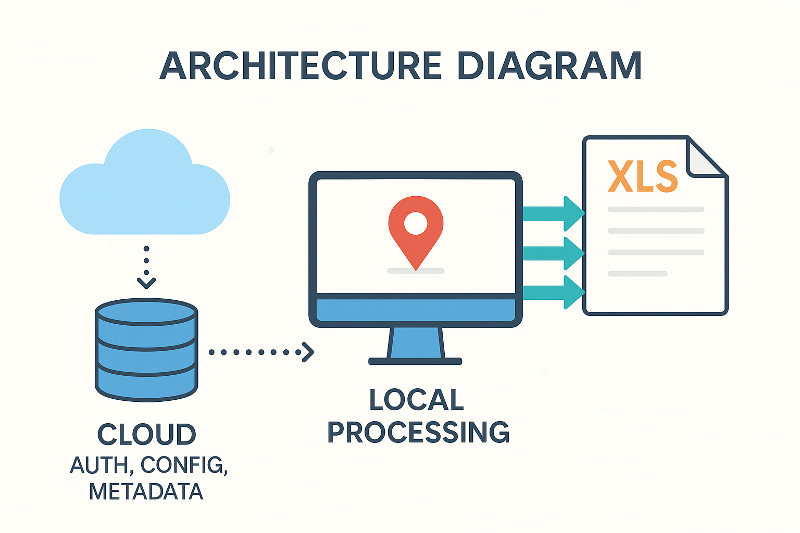
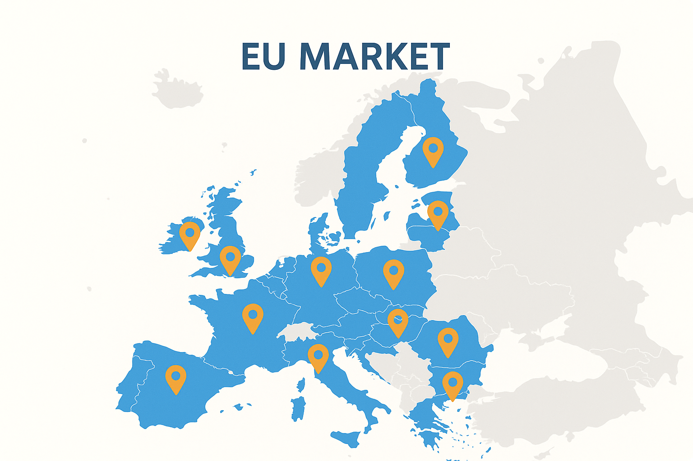
ZENO CY начинает с рынка Кипра — компактного,
высококонкурентного
и идеально подходящего для пилота — затем масштабируется на Южную и
Центральную Европу.
Все они обязаны вести отчётность, соблюдать GDPR и работать с первичными финансовыми документами.
В эту зону входят:
Здесь самая острая боль:
ручная обработка CSV/PDF и страх перед передачей персональных данных в
облако.
5–7% локального рынка → 700–1,000 пользователей
(B2B)
через прямые продажи + партнёрства + рекомендации.
+2,000–3,000 пользователей
+4,000–7,000 пользователей
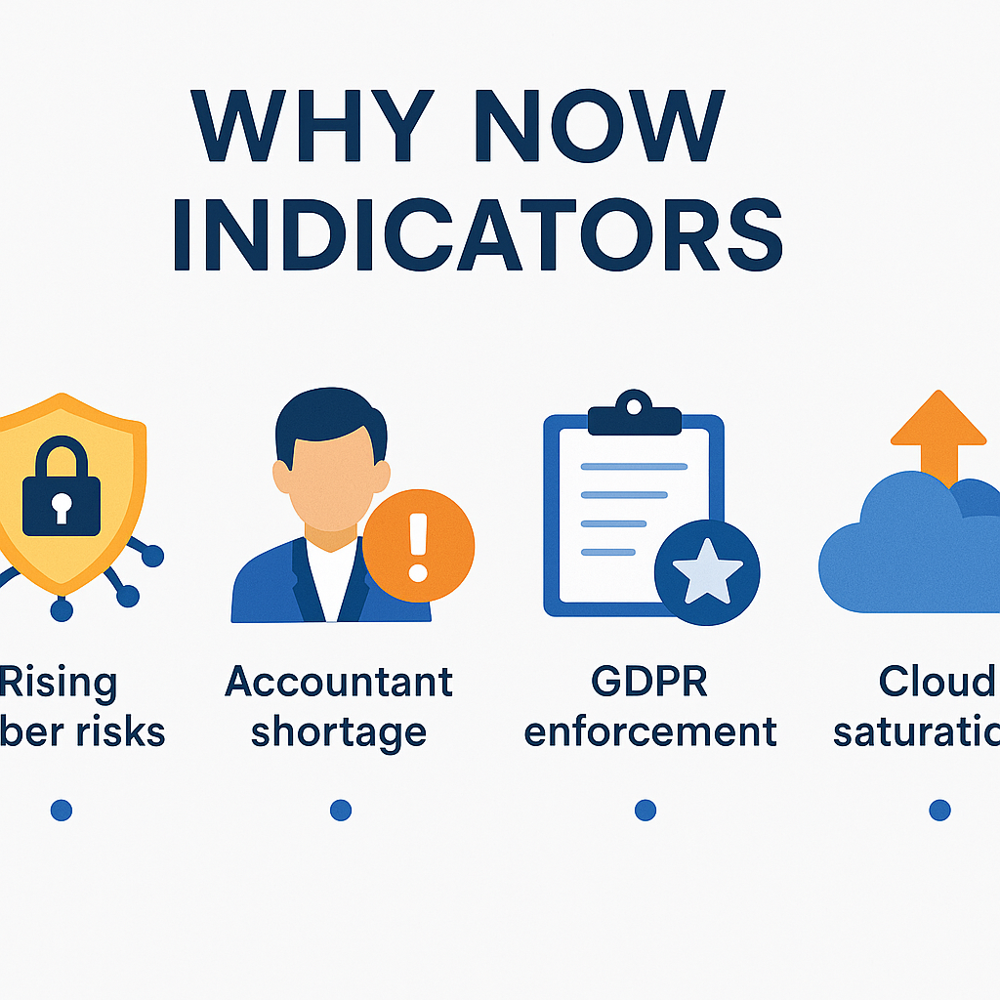
Количество проверок и штрафов увеличивается каждый год.
Бизнесу нужен способ автоматизировать документы без передачи
данных в облако.
Бумага уходит, но автоматизации без риска всё ещё нет.
Специалисты стоят дорого → автоматизация становится выгоднее.
Каждый банк → свой CSV → постоянные ошибки → миллионы часов ручной работы.
Бизнес хочет простые, быстрые, безопасные инструменты — не ERP уровня SAP.
Кипр — идеальная тестовая площадка:
1 бухгалтерская фирма = 20–200 клиентов.
То есть один успешный контракт → мгновенный мультипликатор.
После подтверждения продукта на Кипре,
ZENO CY масштабируется на рынки, которые похожи по структуре и боли:
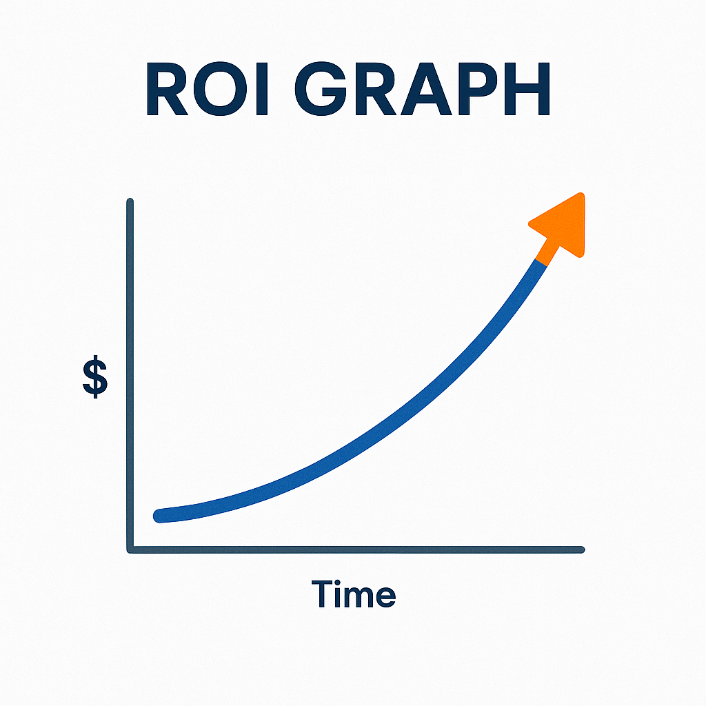
Каждая фирма экономит:
Подписка на ZENO CY (€49/мес) окупается менее чем за:
Рынок огромен, боль острая, конкурентов с локальной обработкой нет.
ZENO CY закрывает проблему, которую давно пора решить.
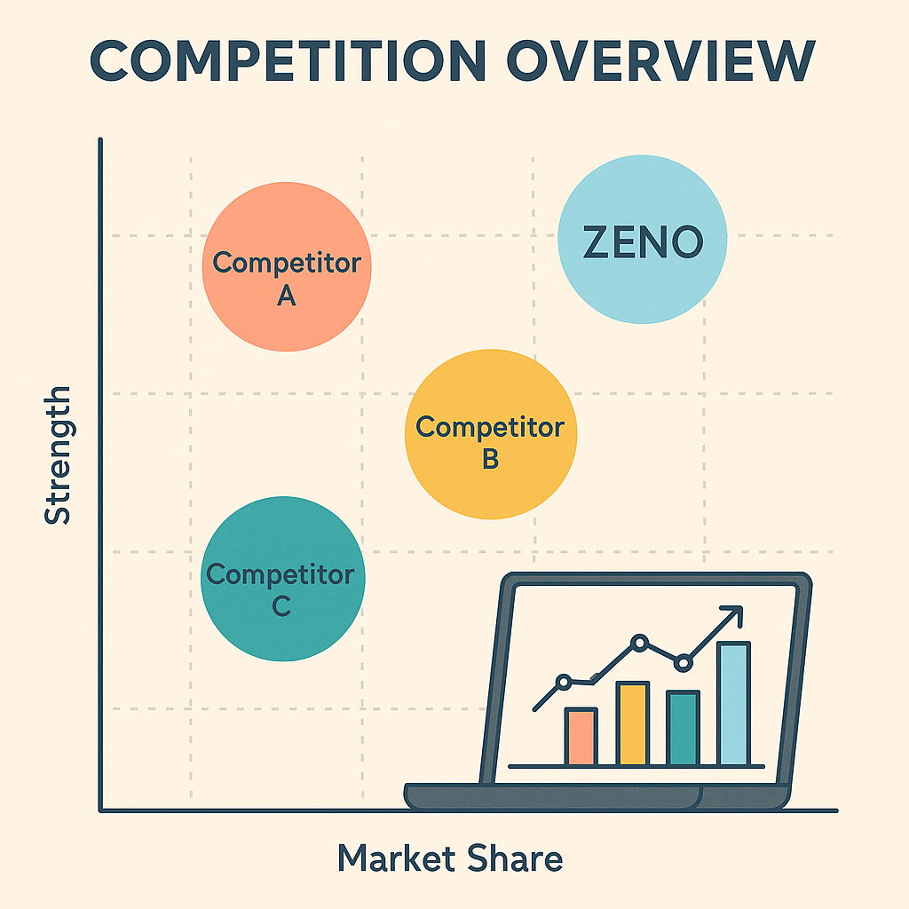
Большинство решений либо слишком сложны, либо требуют выгрузки чувствительных файлов на сервер, либо не поддерживают нестабильные форматы кипрских и южноевропейских банков.
ZENO CY — первое решение, которое сочетает простоту SaaS и локальную обработку без рисков.
Примеры: Receipt OCR-сервисы, финтех-инструменты уровня SMB.
Примеры: SAP, Oracle NetSuite, локальные кипрские бухгалтерские решения.
Это фактически главный “конкурент” в Европе.
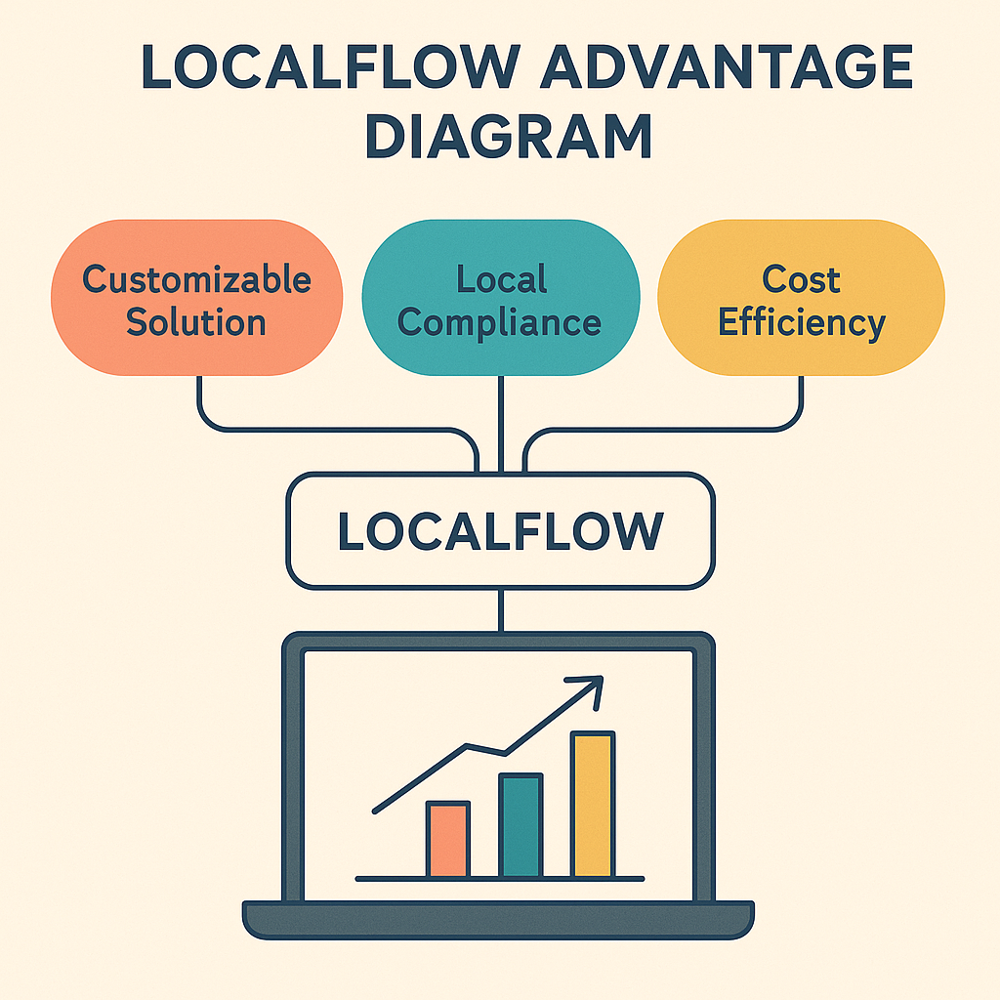
“Cloud SaaS + Local Processing (Go-WASM)”**
| Сервис/Тип | Облачная обработка | Локальная обработка | Риски GDPR | Поддержка кипрских CSV | Скорость | Стоимость |
|---|---|---|---|---|---|---|
| Типичные SaaS парсеры | ✔ | ✘ | Высокие | Частичная | Средняя | Средняя |
| ERP / Учётные системы | Частично | Частично | Средние | Низкая | Низкая | Высокая |
| Ручная работа (Excel) | ✘ | ✔ (но вручную) | Низкие | Зависит от человека | Низкая | Очень высокая (по времени) |
| ZENO CY | ✔ (управление) | ✔ 100% локально | Нулевые | Да (все банки Кипра) | Очень высокая | Низкая |
Большинство сервисов выбирают одно:
ZENO CY впервые делает оба варианта возможными одновременно.
У конкурентов нет такого подхода.
Это сложно повторить “на коленке”.
Большинство сервисов просто не будут этим заниматься — рынок маленький.
Время выхода на рынок → минимальное.
У конкурентов такого нет.
У ZENO CY нет прямых конкурентов.
Есть альтернативы — и мы лучше каждой из них.
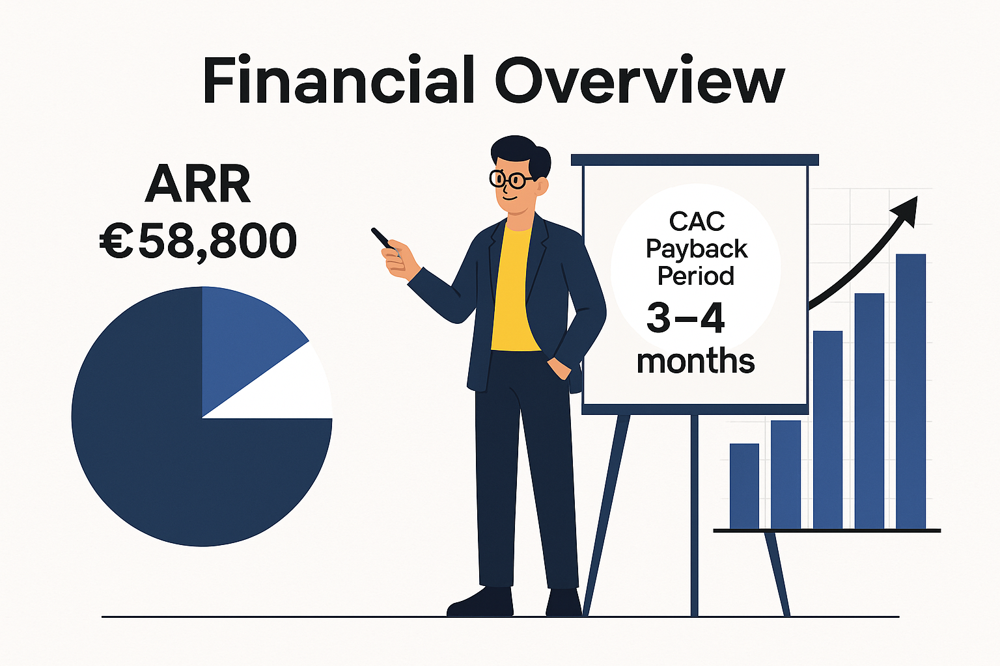
Наша архитектура (Cloud SaaS + Local Processing) минимизирует
стоимость серверов
и исключает расходы на хранение данных.
Главные инвестиции идут в разработку, маркетинг и продажи.
Финансовая модель построена на стандартных европейских SaaS-показателях.
| Метрика | Значение | Комментарий |
|---|---|---|
| Цена подписки (ARPA) | €49/мес | Конкурентоспособная для бухгалтерских фирм |
| Годовая стоимость (ARR per user) | €588 | Базовый пакет |
| Средний срок жизни клиента (LTV Horizon) | 30 месяцев | Для бухгалтерий Европа/Кипр |
| Churn (отток) | ~3.3% в месяц | Консервативная оценка |
| LTV (Lifetime Value) | €1,470 | Уже отличная юнит-экономика |
| CAC (Customer Acquisition Cost) | €150 → €110 | Снижается с масштабом |
| LTV / CAC | 9.8 : 1 | Рынок считает “идеальным” любое значение выше 3:1 |
| CAC Payback Period | 3–4 месяца | Быстрая окупаемость клиента |
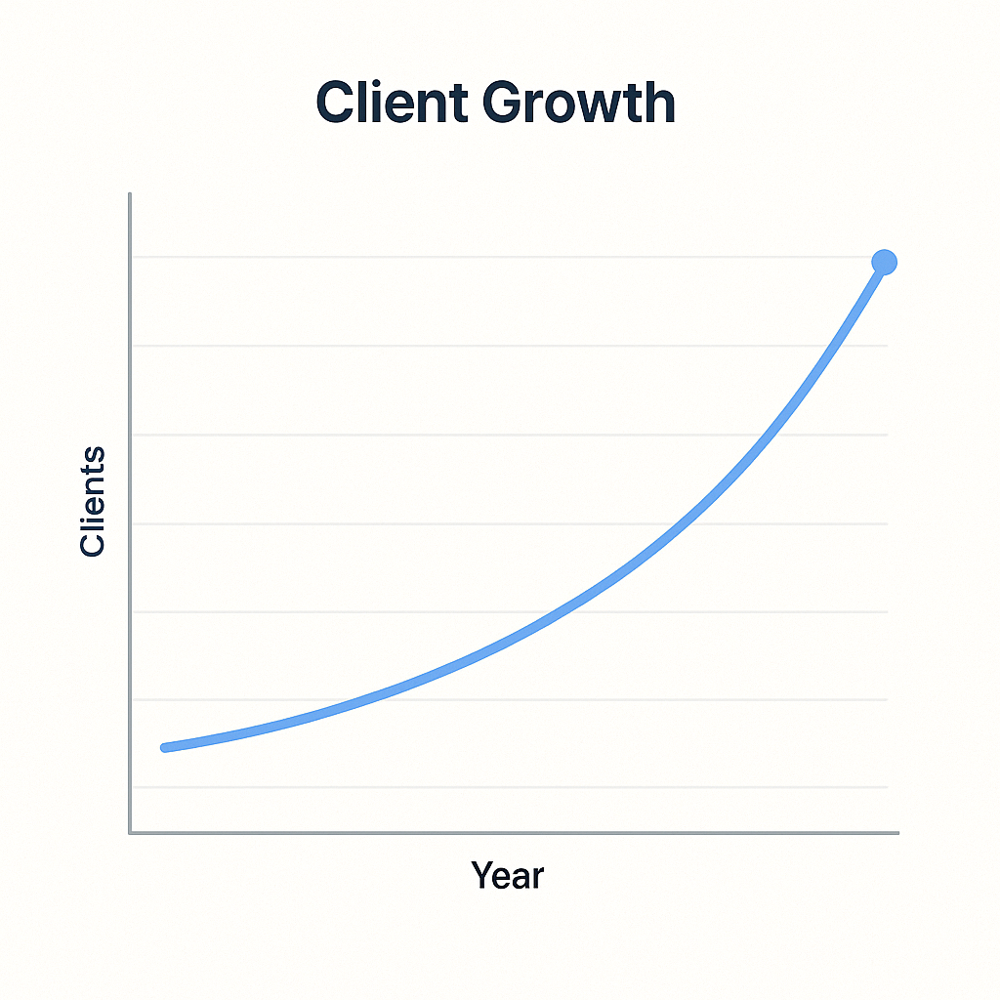
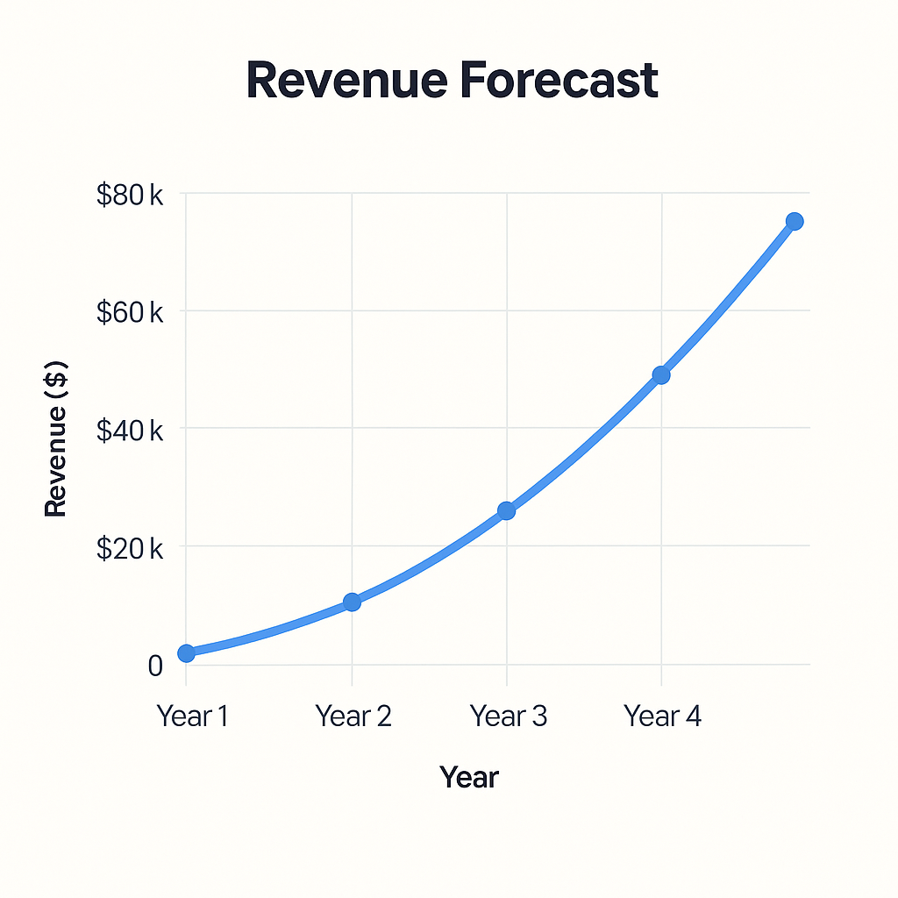
| Год | ARR (Annual Recurring Revenue) | Рост |
|---|---|---|
| 2026 | €58,800 | Базовый год |
| 2027 | €235,200 | +300% |
| 2028 | €470,400 | +100% |
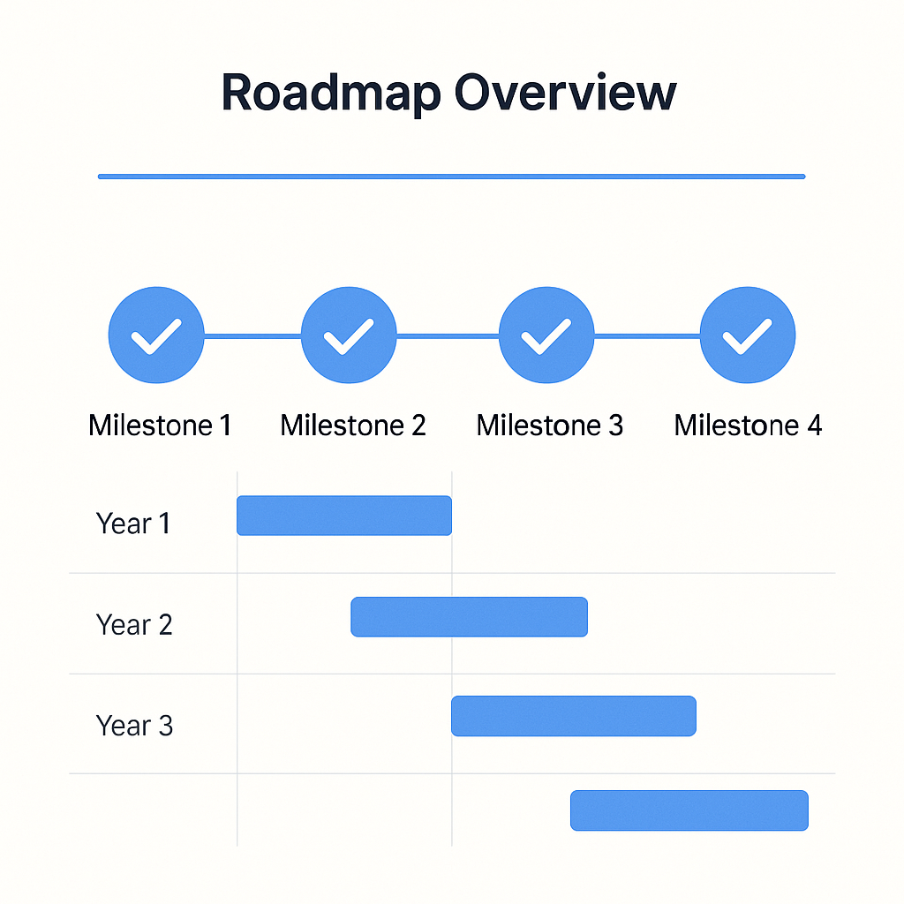
от MVP к работающему коммерческому продукту с расширением на Южную Европу.**
План построен на принципах “lean”, с фокусом на проверку гипотез,
быстрые итерации
и подтверждение реальной потребности на рынке.
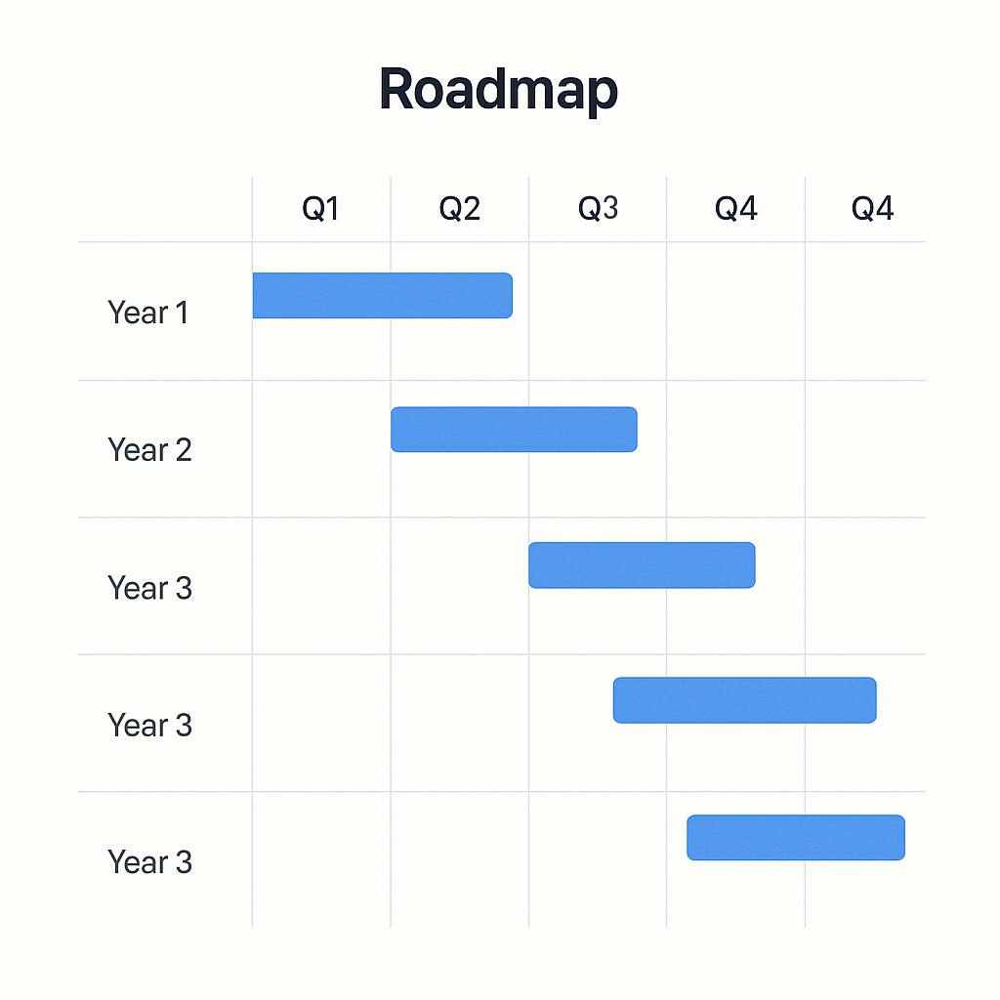
Co-Founder & CTO
Техническое лидерство, продукт, архитектура
📌 Главная зона ответственности:
Технология, архитектура, продукт и продуктивность инженерной части.
Co-Founder & Business Lead
Коммерция, финансы, продажи и стратегическое развитие
📌 Главная зона ответственности:
Коммерческая часть, работа с клиентами, партнёрами и финансовой
моделью.
Техническую (Go/WASM, архитектура, безопасность, обработка
данных)
и бизнесовую (финансы, продажи, операционное управление).
Хотя мы находимся в Израиле, мы ежедневно сталкиваемся с теми же
задачами,
что и бухгалтерские и сервисные компании на Кипре и в Европе:
Мы перенесли этот практический опыт на кипрский контекст,
изучили форматы местных банков и запросы потенциальных клиентов,
и на этой базе спроектировали ZENO CY как универсальный инструмент для
Южной Европы.
Это не эксперимент “на бумаге”, а инженерный ответ на реальную
проблему:
как автоматизировать работу с финансовыми документами
без передачи данных в облако.
(формируем пул)
Примечание: Мы уже начали коммуникации с потенциальными советниками и планируем formal onboarding после вступления в инкубатор.
Мы строим не просто инструмент для обработки CSV.
Мы создаём доверенный, безопасный слой работы с финансовыми документами
для Кипра и всей Южной Европы, где автоматизация не требует жертвовать безопасностью.
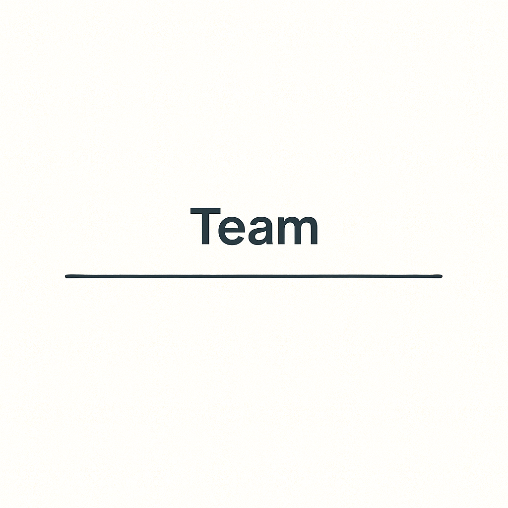
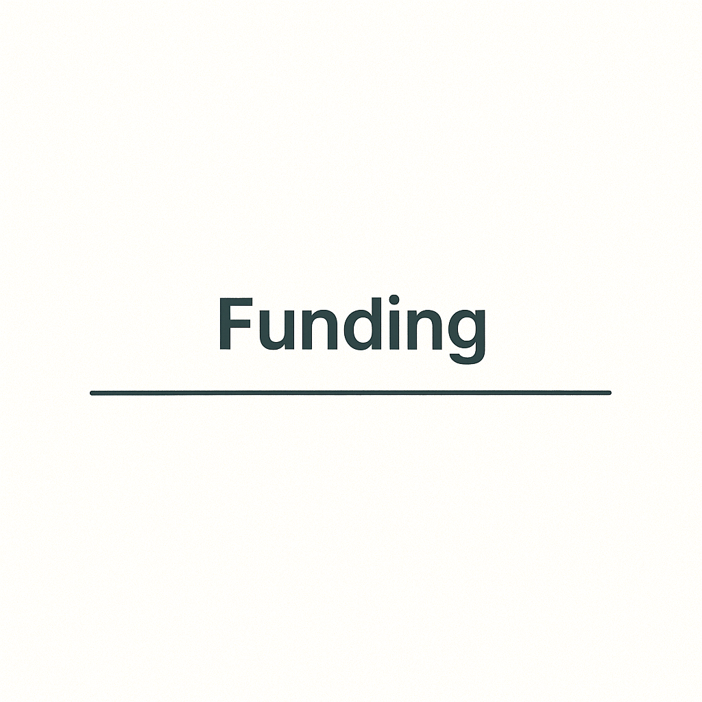
Мы запрашиваем €20,000 сид-финансирования
для покрытия 6-месячного runway на Кипре, завершения
разработки Zeno CY
и вывода продукта на рынок Кипра.
Цель запроса — обеспечить стабильность, завершить работу над
локальным движком (WASM),
провести первые пилоты и запустить продажи.
| Статья расходов | Сумма (€) | Период | Цель |
|---|---|---|---|
| Проживание и базовые расходы основателя | 7,200 | 6 месяцев | Обеспечение стабильной работы над продуктом (Кипр / удалённо) |
| Юридическая поддержка и регистрация | 1,800 | Разово | Создание юридического лица, сопровождение GDPR и локального комплаенса |
| Маркетинг и GTM | 2,000 | 3–6 месяцев | LinkedIn Ads, подготовка пилотов, работа с бухгалтерскими фирмами |
| Инфраструктура и ПО | 1,500 | 6 месяцев | GCP, домены, DevOps, лицензии JetBrains, сервисы разработки |
| Рабочий капитал / резерв | 7,500 | 6 месяцев | Непредвиденные расходы, покрытие риска, адаптация под клиентов |
| ИТОГО | 20,000 |
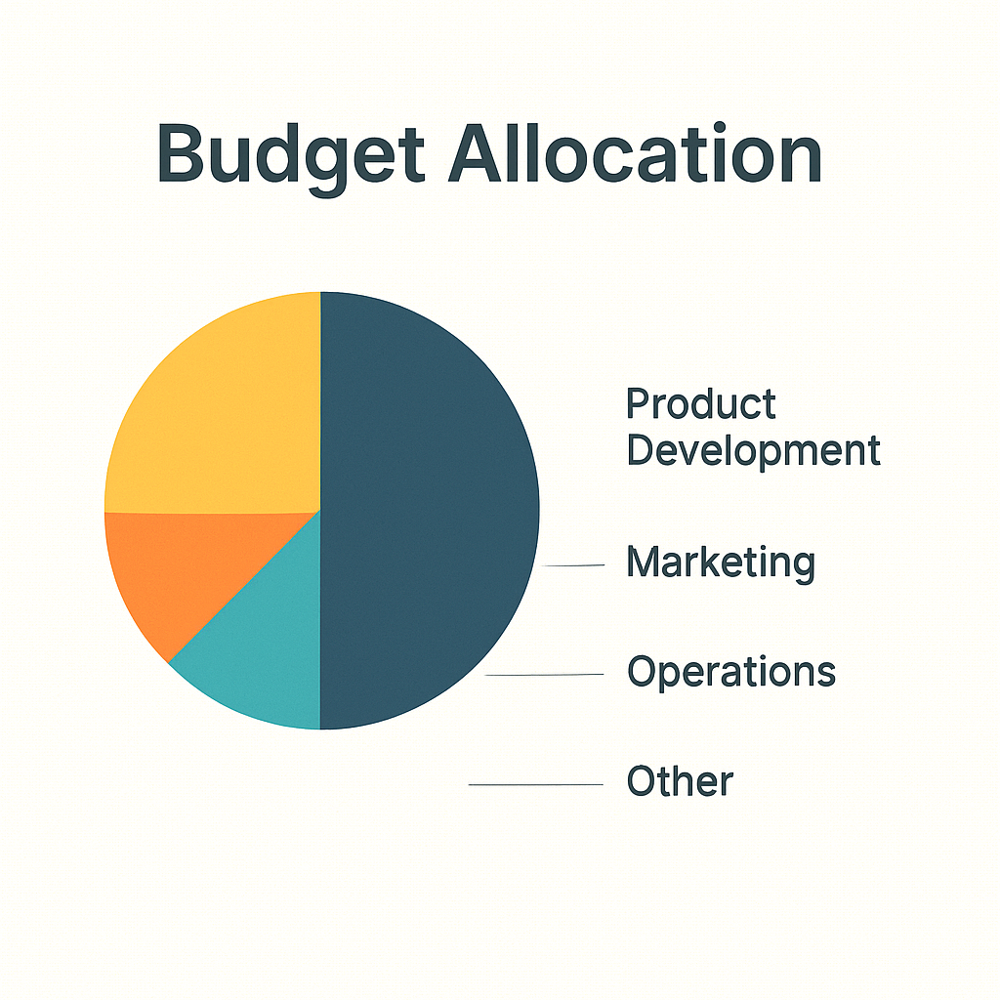
Завершение WASM-ядра, поддержка всех банков Кипра, улучшение UX.
Первые платящие клиенты, запуск партнёрских программ с fiduciary-фирмами.
Подтверждение product/market fit на Кипре, подготовка к расширению в Грецию.
Наша цель — не жить на грантах.
Наша цель — показать, что Zeno CY в состоянии стать самостоятельным бизнесом
уже в течение первого года.
Мы показываем:
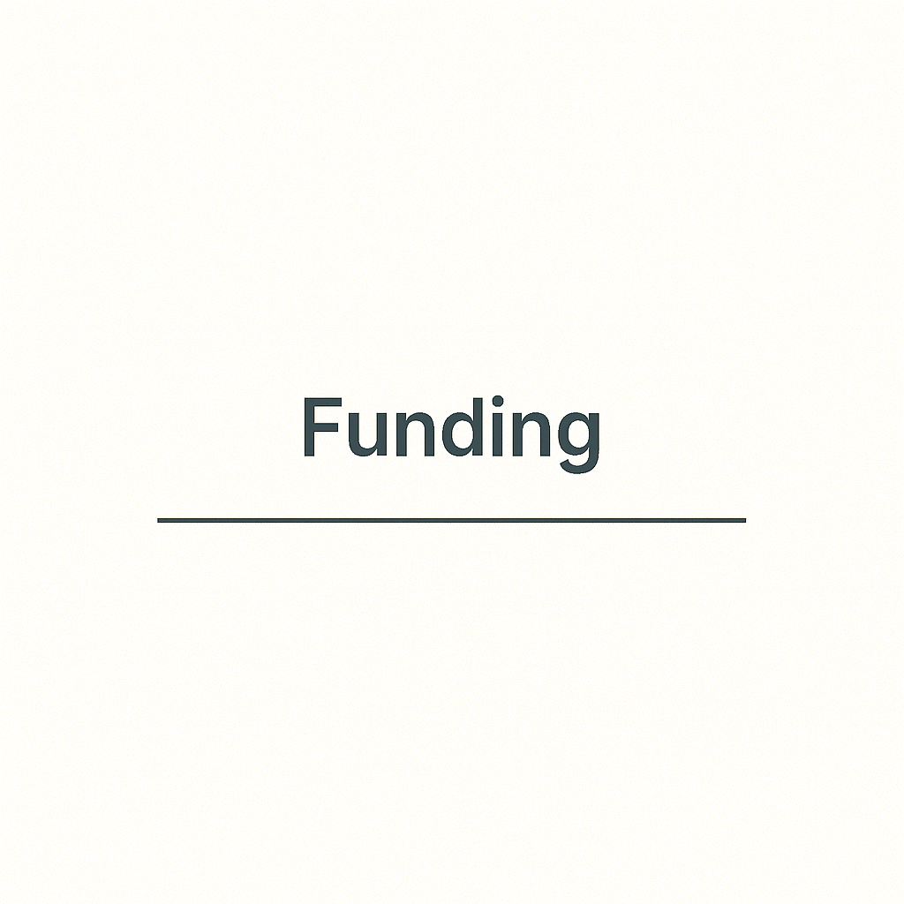
Основа нашего прогноза — консервативные метрики, принятые в FinTech SaaS.
| Метрика | Значение | Комментарий |
|---|---|---|
| Цена подписки (ARPA) | €49/месяц | Базовая лицензия Zeno CY (1 фирма) |
| Churn (ежемесячный) | 3.3% | Уровень, характерный для B2B FinTech |
| LTV (Lifetime Value) | ~€1,470 | На основе среднего срока жизни клиента ≈ 30 месяцев |
| CAC (Customer Acquisition Cost) | €150 → €90 | Снижается после выхода в Грецию и Португалию |
| LTV/CAC | 9.8:1 | Значительно выше индустриального стандарта (3:1) |
| Год | Новые клиенты | Всего клиентов | Churn (нетто) |
|---|---|---|---|
| 2026 | 100 | 100 | - |
| 2027 | 300 | 400 | учитывая churn |
| 2028 | 400 | 800 | устойчивое расширение |
| Показатель | 2026 | 2027 | 2028 |
|---|---|---|---|
| ARR (конец года) | €58,800 | €235,200 | €470,400 |
| Общая выручка (Total Revenue) | €60,000 | €245,000 | €510,000 |
| OpEx (расходы) | €28,000 | €60,000 | €120,000 |
| ФОТ (зарплаты) | €14,400 | €40,000 | €80,000 |
| Net Profit (чистая прибыль) | €17,600 | €145,000 | €310,000 |
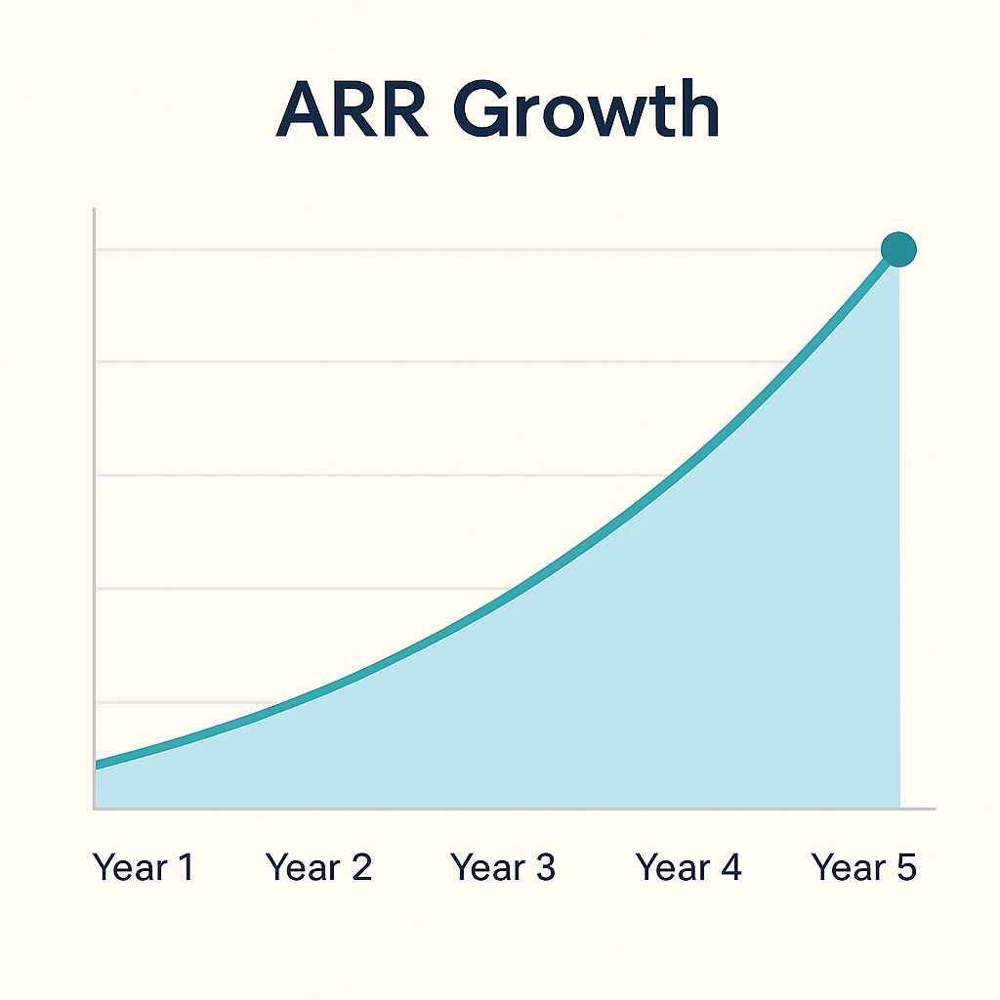
Первые 100 клиентов дают устойчивый денежный поток и самоокупаемость.
Греческий рынок существенно больше, и вход туда увеличивает масштаб.
Испания + Португалия → рост ARR ×2 за один год.
Мы сохраняем минимальный burn rate:
- небольшая команда
- WASM-архитектура снижает расходы на облако
- GTM строится на нишевых каналах, а не массовой рекламе
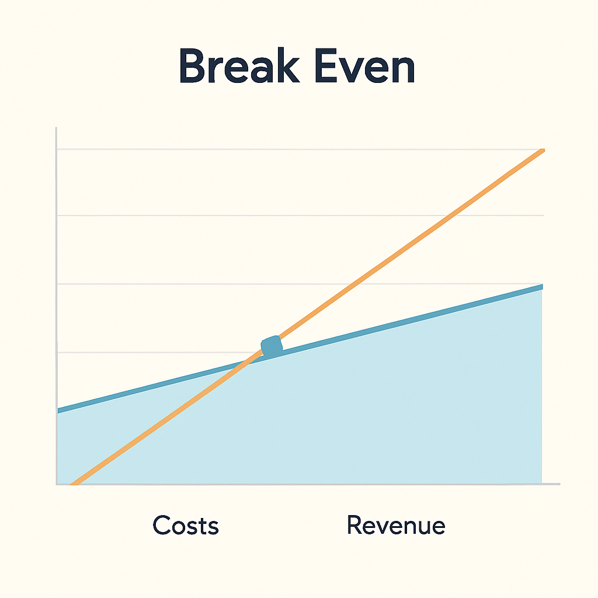
при достижении ~65 активных клиентов.
Zeno CY показывает устойчивый рост, прогнозируемую прибыльность
и достижение операционной независимости в течение первого года.Модель экономична, реалистична и построена по лучшим SaaS-практикам.
Zeno CY — это облачный SaaS, в котором обработка документов
выполняется локально.
Мы совмещаем удобство веб-сервиса с безопасностью “на вашем
устройстве”.
Это ключевая инновация и основа всего продукта.
Архитектура разделена на 3 основных слоя:
Ниже — схема, которую поймёт любой FinTech-эксперт:
flowchart TD
A[Пользователь<br>Бухгалтер / фирма] --> B[Web App<br>(React/Next.js)]
B --> C[WASM Engine<br>(Go → WebAssembly)]
C -->|Локально| D[(Входящие документы:<br>CSV / XLSX / PDF*)]
B --> E[Backend API<br>(Go, Cloud Run)]
E --> F[(Meta-хранилище:<br>логины, настройки)]
C --> G[Результат<br>готовая таблица]
G --> B
subgraph Local Environment
C
D
end
subgraph Cloud (GDPR Safe)
E
F
endШаг 1 — Загрузка документов
Пользователь загружает CSV/XLSX-файлы в браузер. Файлы не отправляются в облако.
Шаг 2 — Локальная обработка (WASM Engine)
Веб-приложение вызывает WASM-модуль — миниатюрный локальный “движок” на Go.
Он делает:
парсинг выписок,
нормализацию форматов,
валидацию данных,
устранение типичных ошибок,
унификацию колонок.
Все операции выполняются внутри браузера, на устройстве пользователя.
Шаг 3 — Облачный бэкенд
Сервер получает только технические данные:
ID пользователя
время операции
количество файлов
настройки обработки
Сам файл, строки и банковские данные — не уходят в облако.
Шаг 4 — Готовая таблица
Результат возвращается оператору в виде:
стандартизированной таблицы,
CSV или Excel,
предпросмотра в браузере,
файла для импорта в бухгалтерское ПО.
12.5. Почему это безопасно (GDPR-by-design)
Наш подход основан на трёх принципах:
Мы не храним документы, строки, транзакции и финансовые данные.
Мы технически не знаем содержание финансовых документов клиента.
Обработка производится на устройстве, а не на сервере.
Этот принцип полностью соответствует требованиям европейских регуляторов и фактически устраняет риски, связанные с:
передачей финансовых данных в облако,
утечками,
ошибками конфигурации,
сторонними подрядчиками.
12.6. Преимущества архитектуры Технические Бизнесовые • Go → WASM: высокая скорость • Минимальные требования GDPR • Zero Retention • Клиенты доверяют локальной обработке • Минимальный нагрузочный профиль на облако • Низкая цена подписки (нет больших OpEx) • Не требует установки приложений • Внедрение за 30 секунд • Совместимость с любой ОС • Масштабирование без “костылей” 12.7. Что даёт эта архитектура инкубатору
Zeno CY создаёт новый класс FinTech-продуктов: облачные SaaS-сервисы, которые не касаются пользовательских данных.
Это открывает путь к:
партнёрствам с банками,
работе с fiduciary-фирмами,
офлайн- и онлайн-бухгалтериями,
работе в индустриях, где хранение данных запрещено (юристы, аудиторы).
```
Zeno CY разработан как Privacy-by-Design
продукт.
Это означает, что защита данных заложена не как “дополнение”,
а как фундамент, на котором построена вся архитектура.
Мы не собираем чувствительные данные.
Мы не храним выписки.
Мы не передаём транзакции в облако.
И мы технически не можем прочитать финансовый документ клиента.
В результате Zeno CY не является процессором персональных данных
(GDPR Article 4), а работает как инструмент локальной обработки.
Сервер получает только:
Мы не знаем, какие транзакции, суммы, имена, IBAN или счета находятся в документе.
Это полностью соответствует GDPR Recital 39 (data minimization).
Основная логика обработки реализована в:
Для GDPR это эквивалентно “локально установленному ПО”,
но без необходимости инсталляции.
Локальный движок:
Движок не имеет внутрь себя встроенных сетевых
вызовов
и не умеет “выгружать” файл куда-либо.
Это фундаментальное ограничение, добавленное специально.
Только:
Никаких:
Мы используем упрощённый и безопасный стек:
Все бэкенд-функции работают в режиме
stateless,
а база данных хранит только учётные записи.
| Боль | Как решает Zeno CY |
|---|---|
| Риск утечек в облаке | Данные вообще не передаются |
| Нужна юридическая оценка облака | Не требуется: мы не храним документы |
| Особые требования аудиторов | Соответствие принципам Privacy-by-Design |
| Клиенты против “облака” | Мы — “облако без данных” |
| Жёсткие корпоративные политики | Можно использовать без интеграций и разрешений |
Zeno CY соответствует:
И главное:
Мы не становимся Data Processor.
Мы — инструмент локальной обработки.
Максимально снижает ответственность клиента.
Zeno CY — это облачный сервис, который технически не способен прочитать данные клиента.
И это наш ключ к доверию и масштабированию.
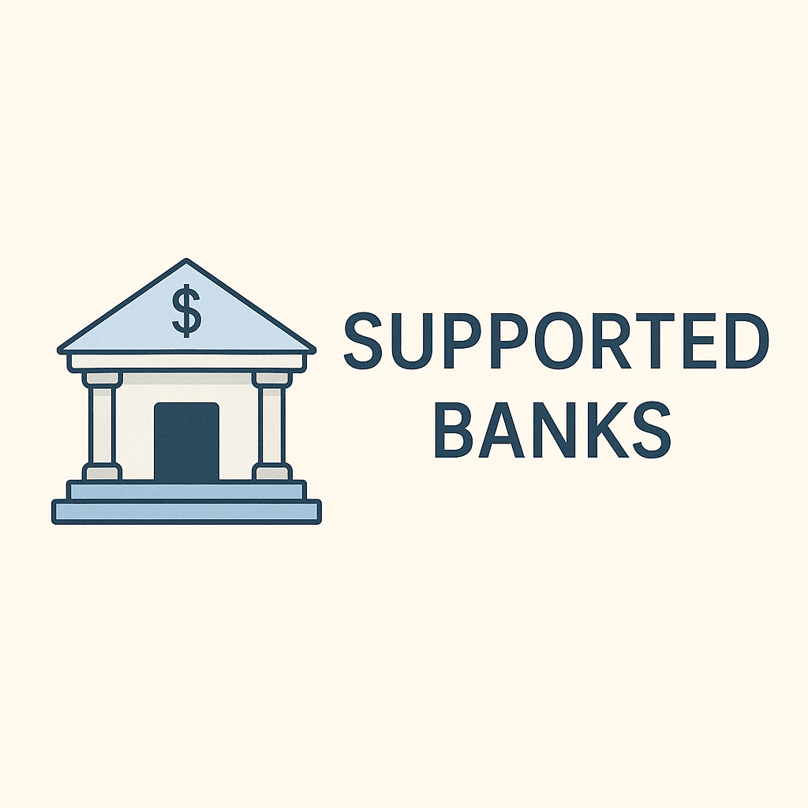
Мы адаптировали и стандартизировали основные CSV- и
XLSX-форматы,
которые используют банки Кипра и Южной Европы.
Каждый формат прошёл:
| Банк | Форматы | Статус | Примечание |
|---|---|---|---|
| Hellenic Bank | CSV | ✔ Поддерживается | Самый хаотичный формат — оптимизирован |
| Bank of Cyprus (BoC) | CSV, XLSX | ✔ Поддерживается | Стандартизация колонок полностью завершена, включая Astrobank |
| Alpha Bank Cyprus | CSV | ✔ Поддерживается | Нормализация «описаний» операций |
| Eurobank Cyprus | XLSX | ✔ Поддерживается | Обработка многоязычных описаний |
| AstroBank | CSV | ✔ Поддерживается | Редкие форматы, унифицированы |
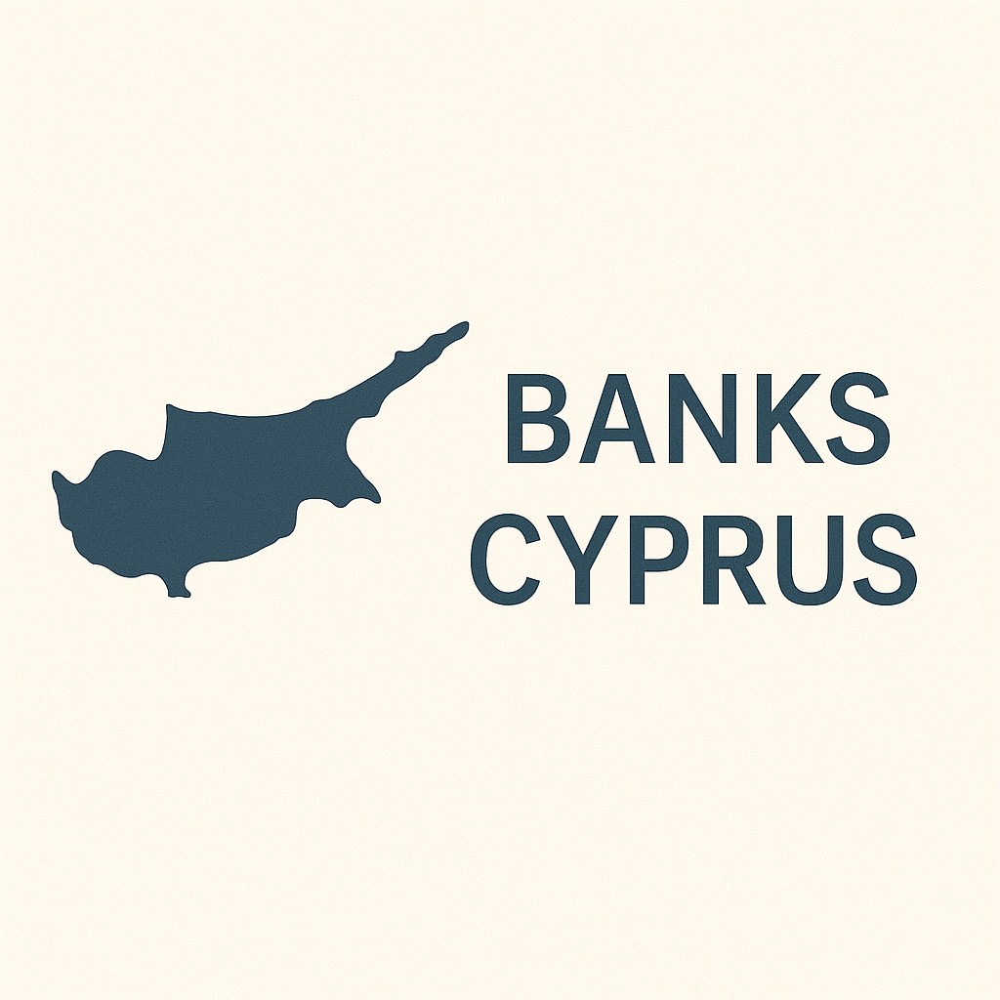
Поддерживаемые банки (в работе):
Греческие CSV/XLSX структурно похожи на кипрские — адаптация быстрая.
В приоритете:
Эти рынки важны для масштабирования: объём МСБ ×5 по сравнению с Кипром.
Мы готовим архитектуру под поддержку:
С немецкими банками типичная сложность — большое разнообразие
форматов.
Наш движок уже способен автоматически определять структуру CSV
и адаптировать колонки под единый шаблон.
| Тип документа | Статус | Описание |
|---|---|---|
| CSV банковских выписок | ✔ Полная поддержка | Любой формат: UTF-8 / Windows-1253 / Unicode |
| XLSX отчёты | ✔ Поддержка | Обработка многоязычных полей |
| PDF выписки | ⏳ Q3 2026 | OCR через локальный WASM-модуль (без отправки файлов) |
| ZIP-архивы | ✔ Автоматическое разворачивание | Обработка нескольких CSV внутри ZIP |
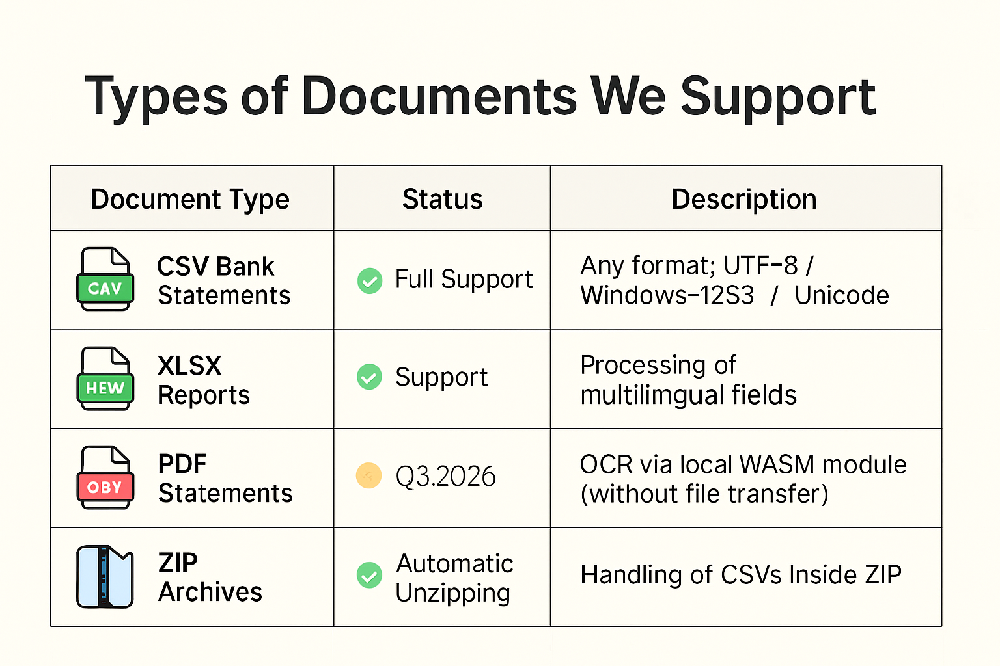
Наш движок автоматически:
, ;
\t),DateDescriptionAmountBalanceCounterparty| Проблема | Как решает Zeno CY |
|---|---|
| У каждого банка свои форматы | Автоматически определяем банк |
| Много ошибок формата | Нормализуем и чистим |
| Разные кодировки | Автоматическое определение и исправление |
| Хаос в описании операций | Алгоритмы унификации и разбиения |
| Требуются знания Excel | Нужны только 2 клика в браузере |
Zeno CY — один из первых FinTech-инструментов,
который работает не с «идеальными тестовыми CSV»,
а с реальными банковскими файлами Кипра и Южной Европы.
Сегодня бухгалтерские фирмы используют:
Но унифицированных, безопасных, локальных и удобных решений — нет.
Zeno CY занимает уникальную нишу:
SaaS-сервис с локальной обработкой финансовых данных через
WASM.
Примеры: ReceiptBank, Expensify, Bokio, Sage tools
Проблемы: - все данные уходят в облако
- сложный GDPR
- высокая стоимость
- зависимость от серверов
- не оптимизированы под Кипр и Грецию
Что мы делаем лучше: - мы вообще не храним
данные
- локальная обработка — абсолютная безопасность
- адаптация под местные банки
- низкий OpEx → выгодная подписка
Примеры: локальные бухгалтерские «импорт-модули»
(которые почти не обновляются)
Проблемы: - устаревший интерфейс
- невозможность адаптации под новые форматы
- нет мобильности
- невозможность быстро масштабировать
- зависимость от Windows
Что мы делаем лучше: - работает в браузере
- без установок
- мгновенные обновления
- поддержка Mac / Windows / Linux
- автоматическое определение форматов
Проблемы: - отсутствие стандартизации
- человеческий фактор
- невозможность поддерживать много клиентов
- ошибки в формулах
- никакой безопасности
Что мы делаем лучше: - стабильный движок на Go
- автоматизация на уровне платформы
- не нужен сотрудник для ручной работы
- GDPR-safe
| Критерий / Решение | Zeno CY | Облачные SaaS | Legacy Windows | Фриланс/Скрипты |
|---|---|---|---|---|
| Локальная обработка | ✔ | ✖ | ✔ | ✖ |
| Zero Retention | ✔ | ✖ | ✔ (частично) | ✖ |
| GDPR услуги | Максимальные | Средние | Низкие | Отсутствуют |
| Скорость | Высокая (WASM) | Средняя | Низкая | Нестабильная |
| Качество нормализации | Высокое | Среднее | Низкое | Нестабильное |
| Поддержка новых банков | Мгновенная | Медленная | Очень медленная | Отсутствует |
| Стоимость | Низкая | Высокая | Средняя | Разная |
| Масштабируемость | Высокая | Высокая | Низкая | Нулевая |
| Не требует установки | ✔ | ✔ | ✖ | ✖ |
Мы единственные, кто совмещает SaaS и локальную обработку.
Другие решения используют Python/JS-скрипты.
Мы — компилируем ядро в WebAssembly.
Не «универсальные CSV», а настоящие форматы BoC, Hellenic, Alpha, Millenium, Santander.
2 клика → загрузил → получил таблицу.
Низкий OpEx = доступная подписка = быстрый рост клиентской базы.
Отсутствие DPA, отсутствие хранения данных, отсутствие риска.
Zeno CY — уникальное сочетание скорости, локальной безопасности и удобства SaaS,
которого сегодня нет ни у одного конкурента в Южной Европе.